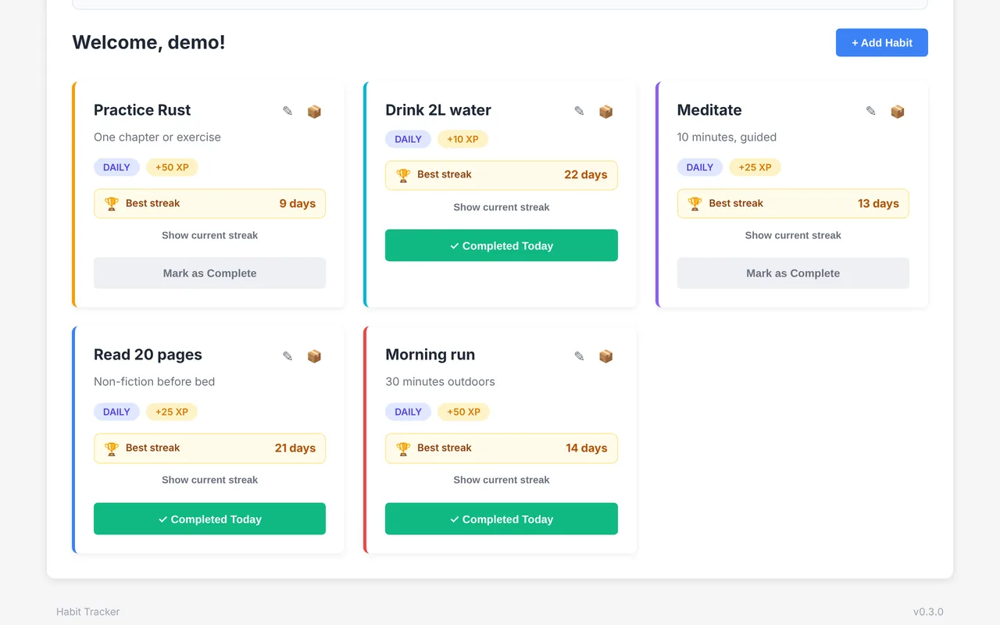
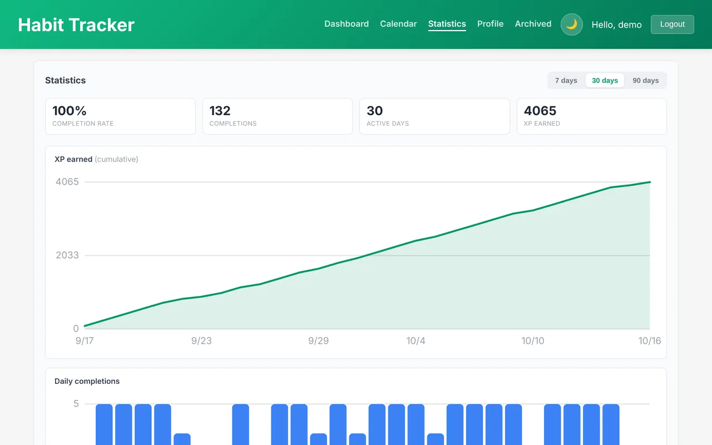
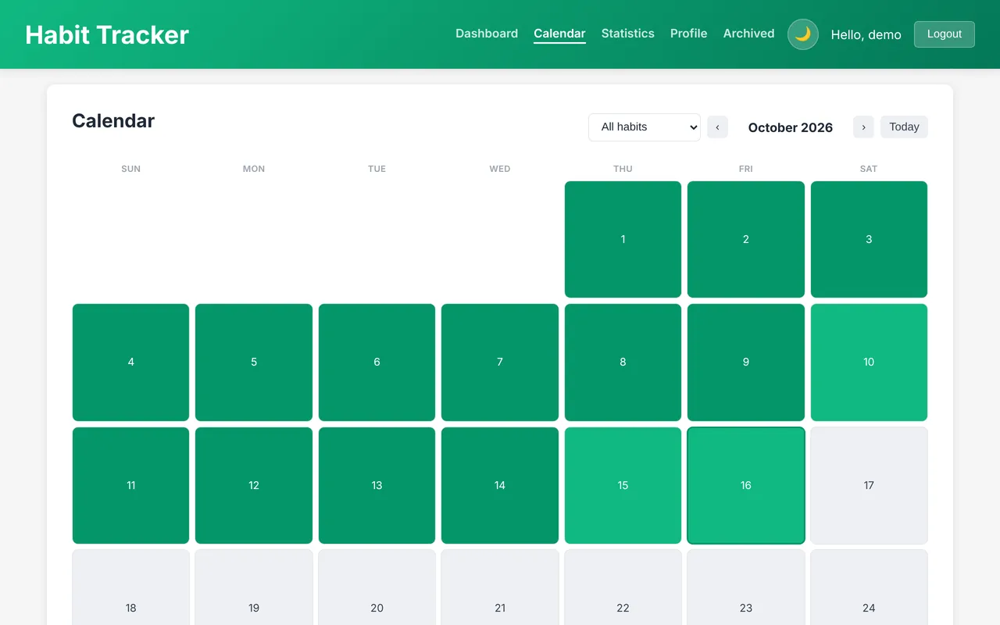
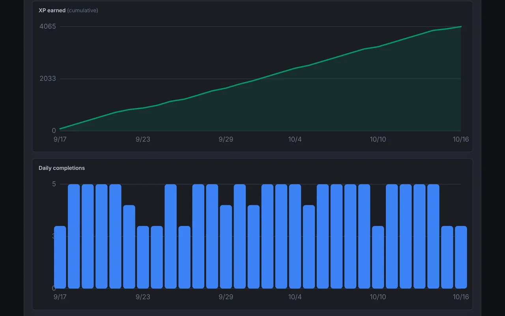
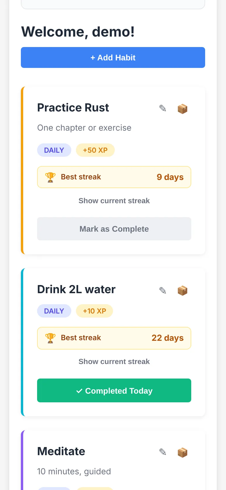
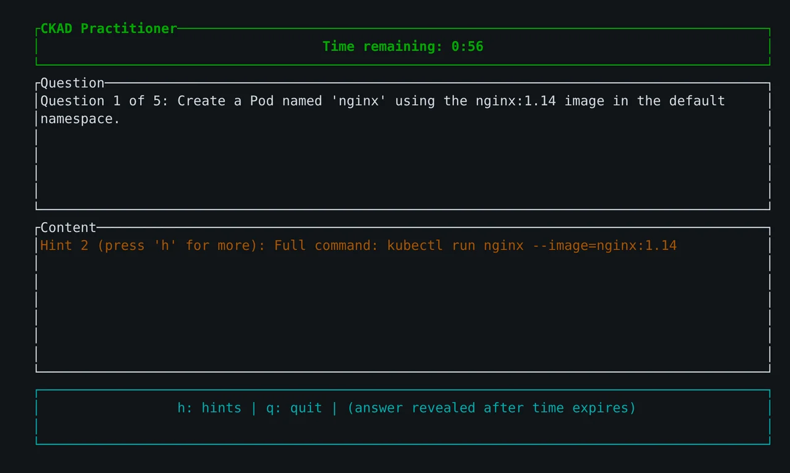
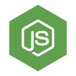
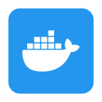
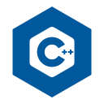
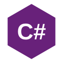

Languages
Backend
Infra & cloud
Data
Workshop
On the bench

Dashboard with streaks, XP rewards and one-tap completion

Statistics: completion rate, XP earned and daily trends

Monthly calendar for backfilling and reviewing history

Dark mode, synced with the OS preference

Responsive down to phone width
Habit Tracker
Gamified habit tracking with XP, levels, streaks, a calendar and stats. Full stack, containerized, with Kubernetes manifests.
ReactNode.jsMongoDBKubernetes
yasersyed/habit-tracker

CKAD Practitioner
A timed terminal quiz I wrote in Rust to study for the CKAD exam, with progressive hints.
RustRatatuiKubernetes
yasersyed/ckad-practitioner
void printChipInfo() {
Serial.println("=== CHIP INFO ===");
Serial.printf("Model: %s\n", ESP.getChipModel());
Serial.printf("Revision: %d\n", ESP.getChipRevision());
Serial.printf("Cores: %d\n", ESP.getChipCores());
Serial.printf("CPU Frequency: %d MHz\n", ESP.getCpuFreqMHz());
}
void loop() {
if (millis() - lastBlink >= 1000) {
lastBlink = millis();
ledState = !ledState;
digitalWrite(LED_PIN, ledState ? HIGH : LOW);
}
}
ESP32 Lab
Board tests and a health check sketch for ESP32: chip and memory info, a Wi-Fi scan and an LED heartbeat.
C++ArduinoArch Linux
yasersyed/esp32-lab
Nabata screenshots go here
Nabata
TODO: one or two sentences on what Nabata does and who it's for.
TODO
Day job
PCI Energy SolutionsActing development manager, previously senior software developer. Java and Spring Boot services on AWS and Kubernetes.
CognizantSoftware engineer. HIPAA-compliant claims processing in Java on Azure.
Eaton's Crouse-HindsCo-op. C firmware and ASP.NET dashboards for industrial lighting.
WiproProject engineer. Perl and shell dashboards and automation.
School
Syracuse UniversityMS, Computer Engineering
Anna UniversityB.Tech, Information Technology




Java
At work, daily
My main language since 2018, from Java 8 to 21. Mostly Spring Boot services and data pipelines.
Built with it
- Work code, so nothing public yet.
Rust
Side projects
Learning it properly: worked through the Rust book, then wrote a terminal quiz app with Ratatui.
Built with it
Python
At work, side projects, grad school
Scripts at work, neural networks in grad school, and embeddings for a code search tool.
Built with it
TypeScript
At work, side projects
React and Node.js. Took over a React frontend at work, and built habit-tracker end to end.
Built with it
C++
At work, grad school, side projects
Firmware at Eaton, a code publisher and dependency analyzer in grad school, and ESP32 sketches now.
Built with it
C#
Grad school, at work
A remote test harness in grad school, and ASP.NET dashboards at Eaton.
Built with it
SQL
At work, daily
SQL Server, PostgreSQL and Oracle. Data modeling and query tuning.
Built with it
- Work code, so nothing public yet.
Bash
At work, side projects
Glue for everything, including a custom KDE menu on my Arch machine.
Built with it
Perl
Where I started
Dashboards and automation at Wipro, 2013 to 2016.
Built with it
- Work code, so nothing public yet.
Spring Boot
At work, daily
Spring MVC, Spring Data JPA and jOOQ for REST services.
Built with it
- Work code, so nothing public yet.
Node.js
At work, side projects
Express APIs, including an analyzer backend at work and the habit-tracker API.
Built with it
OAuth2 / JWT
At work, side projects
OAuth2/OIDC with role-based access at work; JWT auth in habit-tracker.
Built with it
Kubernetes
At work, side projects
CKAD certified. I wrote a Rust quiz app to study for the exam.
Built with it
Docker
At work, side projects
Everything I ship runs in a container.
Built with it
AWS
At work
S3, EC2, EKS and IAM, with least-privilege roles per service.
Built with it
- Work code, so nothing public yet.
Argo CD
At work
GitOps deployments to cloud and on-prem clusters.
Built with it
- Work code, so nothing public yet.
CI/CD
At work, side projects
GitLab CI at work, GitHub Actions at home.
Built with it
PostgreSQL
At work
Relational modeling and tuning across cloud and on-prem.
Built with it
- Work code, so nothing public yet.
MongoDB
Side projects
The data store behind habit-tracker.
Built with it
Redis
At work
Caching and a Redis-driven job scheduler.
Built with it
- Work code, so nothing public yet.
Kafka
At work
Kafka and RabbitMQ for messaging between services.
Built with it
- Work code, so nothing public yet.
Spark
At work
Spark, Trino and Apache Iceberg for petabyte-scale analytics.
Built with it
- Work code, so nothing public yet.
React
At work, side projects
Shipped features solo on a React app at work; built the habit-tracker UI.
Built with it
Ratatui
Side projects
Terminal UIs in Rust. My favourite way to build small tools.
Built with it
Arch Linux
Daily driver
My everyday OS, with KDE. The esp32-lab README even has the Arch serial-port fix.
Built with it
ESP32
Side projects
Getting into hardware: board tests, Wi-Fi scans and a heartbeat LED.
Built with it
Claude Code
At work, side projects
I write custom skills that scaffold and migrate code, and every change still goes through review and tests.
Built with it
Ollama
Side projects
Local models for code understanding, paired with Sentence-BERT embeddings.
Built with it